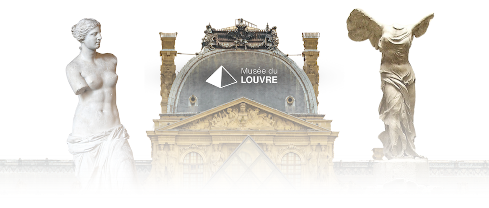
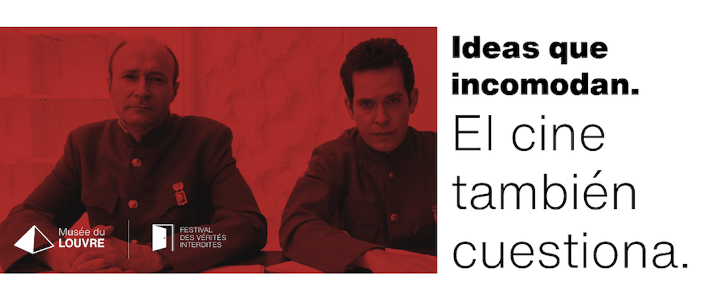
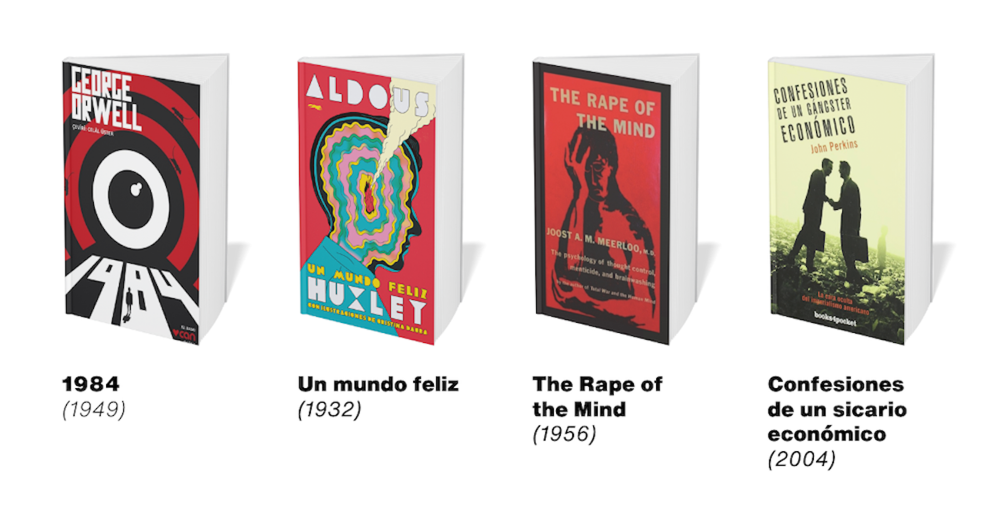
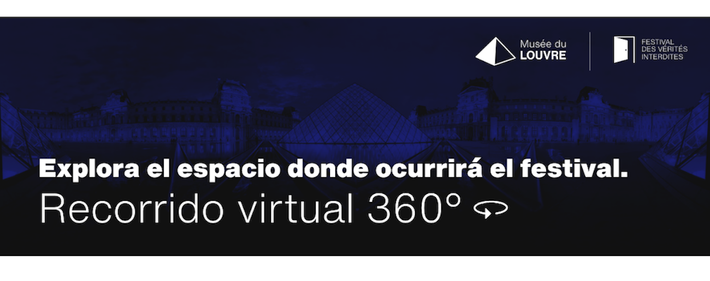

Musée du Louvre – Espacio de Ideas
El Museo del Louvre, símbolo de historia, arte y conocimiento, se transforma temporalmente en un punto de encuentro para la reflexión contemporánea. Este espacio que ha resguardado por siglos las obras más valiosas de la humanidad, ahora se abre a un nuevo lenguaje: el del pensamiento crítico, la palabra libre y la mirada cuestionadora.
En el marco de esta nueva apertura, surge el Festival des Vérités Interdites, una iniciativa que une conferencias, libros y cine bajo un mismo objetivo: ofrecer a los visitantes una experiencia que sacuda, incomode y despierte. Porque el conocimiento no solo se contempla, también se debate, se escucha, se comparte.

Festival des Vérités Interdites
Del 17 al 23 de octubre de 2025, el Museo del Louvre será sede del Festival des Vérités Interdites, un evento que reúne a pensadores, autores y cineastas de distintos países con una propuesta en común: invitar al público a cuestionar los relatos oficiales y a reflexionar sobre temas silenciados en los discursos tradicionales. La historia, la economía, la política y la psicología se entrelazan aquí desde perspectivas críticas y disruptivas.
Durante el festival se presentarán conferencias de autores como Jorge Guerra, Antony Sutton, Marcelo Gullo y Juan Miguel Zunzunegui, cuyas obras abordan temas de poder, manipulación y conciencia colectiva. Además, se ofrecerá una selección de libros y materiales audiovisuales que amplifican estos debates, en un entorno donde la libertad de pensamiento es protagonista.

Explora los contenidos del festival
El festival ofrece una selección curada de materiales que invitan al análisis profundo de la realidad. Entre los contenidos disponibles se encuentran libros fundamentales, documentales reveladores y tráilers diseñados para despertar el interés por los temas abordados en el evento. Estos recursos están pensados para acompañar y enriquecer las conferencias, abriendo nuevas rutas de comprensión y diálogo.
Desde esta sección es posible visualizar los tres tráilers oficiales: uno dedicado a los ponentes, otro a los libros presentados, y un tercero a las películas proyectadas. Cada uno está disponible en línea y se puede acceder fácilmente desde la página web o escaneando los códigos QR en el cartel del festival. Todo el contenido está organizado para que el visitante pueda explorarlo libremente antes, durante y después del evento.
Ver los tráilers del festival
Explora el espacio del festival
El festival se llevará a cabo en el exterior del Museo del Louvre, un entorno que mezcla historia, arte y arquitectura monumental. Para brindar una experiencia más completa, se ha creado un recorrido virtual que permite explorar visualmente el lugar donde se desarrollará el evento, incluso antes de asistir.
Este recorrido digital permite apreciar la magnitud del espacio, su atmósfera y la conexión simbólica entre el entorno y los contenidos del festival. Es una invitación a adentrarse, desde cualquier lugar del mundo, en el contexto visual que enmarca esta experiencia de pensamiento y expresión crítica.
Ver recorrido virtual 360°